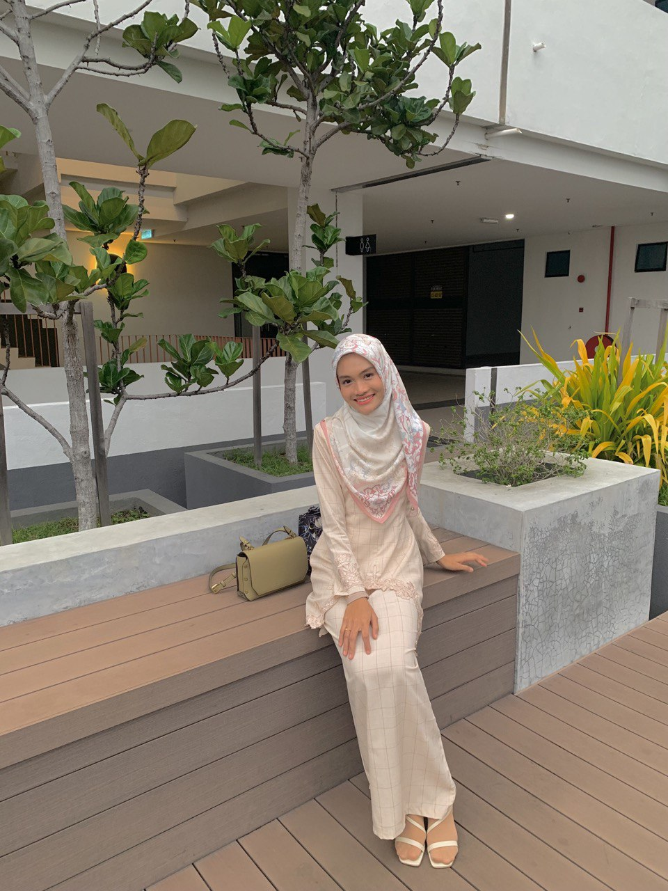

SITI SARAH BINTI CHE HASAN
About Me
Siti Sarah binti Che Hasan is my complete name. I go by the nicknames Caah and Sarah. My senior at Sekolah Menengah Kebangsaan Convent Alor Setar gave me the nickname Caah. She said that Caah would be better for me. Since that time, I have been referred to as Caah rather than Sarah. I still feel at ease being called Sarah, but I firmly object to being called Siti. I'm easily irritated because I feel old. Due to the fact that my elder sister's name is Siti Khadijah, many people refer to her as Siti.
In April of this year, I am turning 21 years old. I am the youngest and was born in the INS Specialist Center in Alor Setar, Kedah. My family originally desired a boy because I have three sisters and one brother. But as it happens, I'm a girl. Because I was not what they were expecting, it is quite funny.
Since I was a standard two, spaghetti has been my favourite food. I first had spaghetti because of my oldest sister, and I've been a huge fan ever since. I enjoy eating various spaghetti dishes, including Bolognese, carbonara, aglio olio, and others. I enjoy eating spicy cuisine as well. My father has been teaching me how to eat "sambal belacan" since I was six years old. Since that time, I have developed a passion for spicy food. For me, food is tastier when it is spicy.
Pop and EDM are my favourite musical genres. I have a lot of calming music, including Love Story by Taylor Swift, Because of You by Ne Yo, and Die For You by The Weeknd. I prefer English music to Malay and Indonesian songs. Additionally, I adore listening to Kpop from artists like Big Bang, Girl Generation, Blackpink, Twice, and others.